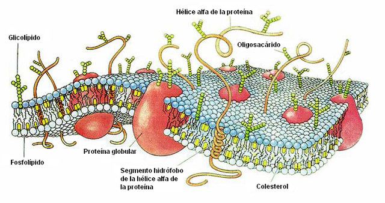
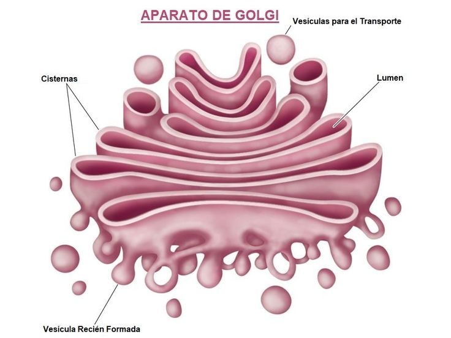

Que es la membrana plasmática?
La membrana plasmática en la célula fungi es una estructura delgada y flexible que rodea el citoplasma y separa el interior de la célula del entorno externo. Compuesta principalmente de una bicapa lipídica, la membrana plasmática contiene proteínas que cumplen diversas funciones, como el transporte de sustancias, la comunicación celular y el reconocimiento de señales.
Esta membrana es semipermeable, lo que significa que regula el paso de iones y moléculas hacia adentro y hacia afuera de la célula, permitiendo la entrada de nutrientes esenciales y la eliminación de desechos. Además, la membrana plasmática está involucrada en procesos de señalización celular, ayudando a la célula a responder a cambios en su entorno.

Que es el aparato de golgi?
El aparato de Golgi en la célula fungi es un orgánulo membranoso que desempeña un papel crucial en la modificación, clasificación y empaquetamiento de proteínas y lípidos que se producen en el retículo endoplásmico. Este orgánulo consiste en una serie de sacos aplanados llamados cisternas, que están apilados y organizados de manera similar a una pila de platos.
En los hongos, el aparato de Golgi recibe proteínas y lípidos del retículo endoplásmico rugoso y suave, respectivamente. Una vez dentro del aparato de Golgi, estas moléculas son sometidas a diversas modificaciones, como la adición de carbohidratos, lo que resulta en la formación de glicoproteínas y glicolípidos. Estas modificaciones son esenciales para la función y destino final de las proteínas.
